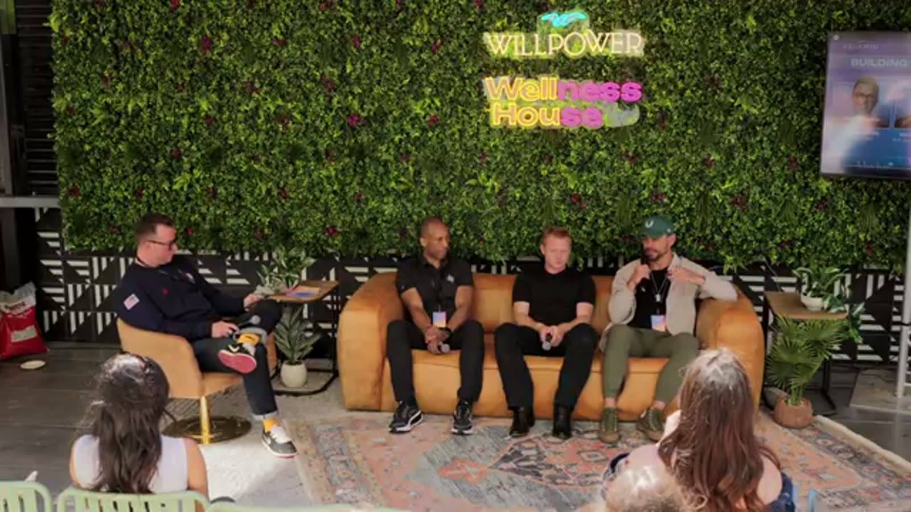

The Spurs do not think of themselves as a sports team
Brian is four months into the job and made this clear fast. The organization runs like an entertainment company.
San Antonio is the 25th largest city in the country. They have never been New York or LA.
That constraint forced a startup brain for decades. Scout international players before anyone else (Tony Parker, Manu Ginobili). Move into Austin before other franchises thought it made sense. Adopt AI infrastructure before most teams had a policy on it.
The most wins in the NBA since 1999. No marquee market, no coastal media machine, no built-in national fanbase.
Outsmarting people is the entire model. So, so consistently.
"We've always had to outsmart and outthink the competition. We're not New York. We're not LA. So we were the first team to really scout international players. We were the first to consider Austin a second market."
Brian, San Antonio Spurs
Playing games somewhere is not the same as being there
The Spurs went to Paris, played the games, flew home. They had real lineage in France through their international players, and they showed up for the event and left.
A few years later they went back with no game scheduled. Just to activate. Watch parties, sponsor events, presence with nothing to sell.
"Just because you play there doesn't mean you're there."
Same logic built the Austin office. 20 Spurs employees are based here full time. They sponsored the Austin Half Marathon. They run watch parties on a schedule.
"We look at Austin as just as much our home market as San Antonio."
Other teams thought they were nuts to move games out of San Antonio. The Spurs see one market through a wider lens, the way DC, Maryland and Virginia are really one 6.5 million person metro wearing three jurisdictions.
Evan's real problem: nobody knows what the league is
Evan runs the Texas Ranchers in Major League Pickleball.
I asked the room who plays pickleball. A few hands. Who knows what Major League Pickleball is? Fewer. Who knows the format well enough to watch a match and care? Fewer again.
His whole community strategy is closing that three layer gap. Understand the sport, then the Ranchers, then how to actually be a fan.
"Education has been a key investment area for us."
Last year's Austin tour stop pulled almost 6,000 people, and most of that room had no idea it existed before they walked in.
Almost 6,000! The market is sitting right there.
"If you give Austin fans an environment to be fans, they will be fans."
Start with the fourth string guy
Tyler played for the Patriots and later founded Stanford's NIL program. His read from inside a locker room is that the most influential players are rarely the most visible.
The guy with 78 Instagram followers who brings his lunchbox to work every day, models what a great teammate looks like, and is loved by everyone in the room.
That is who the team actually watches. Brands that only chase the starting quarterback never see him.
His proof: a brand called Upside Down Dallas ended up on Dak Prescott's head because they started with the fourth string quarterback, who was beloved in that locker room. One relationship rippled through the whole team.
"Put people in place to succeed using their strengths. You're not going to put a route runner in to block. Use that person where they're going to thrive."
Tyler, Former New England Patriots / Stanford NIL FounderNever assume the room knows what you know
Tyler's NIL fundraising pitch assumed that three years after NIL became legal, Stanford graduates understood it.
They did not. First question in nearly every meeting: "Is this illegal? Am I laundering money?"
He had burned 50 to 100 hours pitching something that required teaching NIL 101 first.
"We took the macro of things instead of focusing on what our exact graduate needed to hear."
If your category feels obvious from the inside and opaque from the outside, you are in the education business before you are in the sales business.
Your fans are changing faster than your model
Evan's version of the same mistake. They had a detailed picture of the pickleball fan, then they went to market.
In three years the average age of the pickleball viewer dropped five to six years. It is under 30 now.
"They call it the Benjamin Button sport."
Reports and models are a starting point. You do not know who your fans are until you are in the market watching real behavior.
Stay close and you catch the shift live. Lean on a two year old model and you keep optimizing for people who already left.
What is coming
Tyler sees immersive sphere-style venues shrinking to movie theater scale, so you can sit front row at any game from anywhere.
Evan sees 10,000 plus at a Major League Pickleball event in Austin, with pros in their teens (Annalee Waters, current world number one, is 19 and just signed with Nike).
Brian sees a brand new Spurs arena in downtown San Antonio, five years out, that he thinks permanently changes the city and turns the I-35 corridor into one of the most watched sports markets in the country.
The thread across all three: the communities built before the infrastructure lands are the loyal ones when it arrives.
What to take home
- The Spurs went back to Paris with no game on the calendar just to activate. Presence without a game is how you prove you are building somewhere instead of touring it.
- Pickleball's average fan age dropped 5 to 6 years in three years. A channel strategy built on last year's profile is already stale. Get in the market and watch behavior.
- The fourth string quarterback who is loved in the locker room moves product. Research who has influence inside the team, not just outside it. Cheapest ambassador deals live in that gap.
- The Spurs have won more NBA games than anyone since 1999 and most fans outside San Antonio have no idea. Winning without the story leaves fandom on the table.
- Tyler's NIL lesson applies to any pitch. Obvious inside, opaque outside, means you teach before you sell. Build that into the timeline.